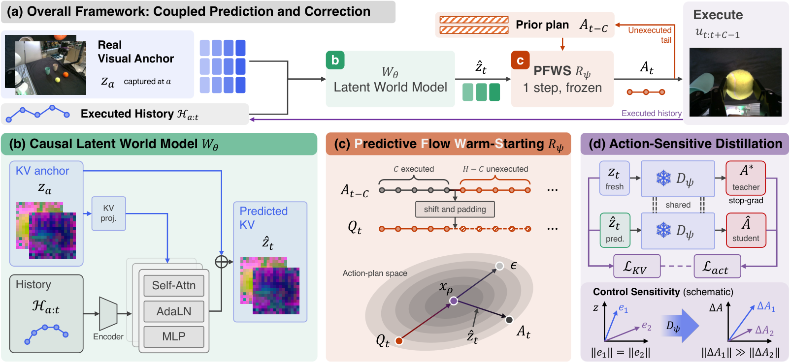

PAPER NOTE · 精选 02
CauSyncVLA¶
CauSyncVLA: Causal Latent World Modeling for Asynchronous Robot Control
作者项目与代码仓库已核验，提供 updater 训练、LIBERO 评测、配置和 Franka 接口说明；基础专家、仿真环境与数据需另行准备，Franka updater 及其配套专家未公开，本次未运行复现实验。 （2026-11-22 核查）
核心方法／执行模块；VLA、潜在 WM；低层控制与观测；固定机械臂桌面操作。
Abstract · 摘要原文¶
Vision-Language-Action (VLA) policies must react while visual inference is still running. Overlapping computation and execution reduces waiting, yet leaves perceptual memory stale and successive action chunks disconnected. We present CauSyncVLA, an asynchronous dual-system controller that aligns perceptual-memory prediction and trajectory correction with actual robot execution. Rather than forecasting pixels or physical states, a Causal Latent World Model predicts current perceptual memory from delayed visual anchors and executed state-action history, supervised through action-sensitive distillation to retain the frozen expert's control response. Conditioned on this updated memory, Predictive Flow Warm-Starting (PFWS) aligns the unexecuted action horizon for single-step flow correction without extra training. On LIBERO-10, CauSyncVLA reaches 93.8% success at 5.04$\times$ inference throughput, improving closed-loop robustness and robot motion smoothness.
方法框架¶

贡献¶
在视觉编码异步运行时，根据已执行状态和动作预测当前感知记忆，再用动作块对齐与单步 flow 修正减少陈旧观测及块边界误差；预测的是控制相关潜在记忆，不是未来视频。
实验¶
LIBERO-10 成功率 93.8%，十步同步基线 91.2%，同 GPU 模型重规划容量提升 5.04 倍；Franka FR3 的叠杯及其他操作汇总成功率由 72.5% 至 87.0%，中位响应由 72 ms 以上降至 13.17 ms。
局限¶
5.04 倍是模型重规划容量，不是整个机器人任务必然加速倍数；轻量记忆预测器仍需训练，真机测试及硬件计时受协议影响，不能据此保证对外界突然变化都可靠。
值得读¶
对照同步／异步执行和任务成功率，帮助把推理吞吐、响应延迟与动作平滑度区分开。
整理自《具身智能论文精选｜2026-11-22》，保留原文的文字与数据。关于阅读笔记